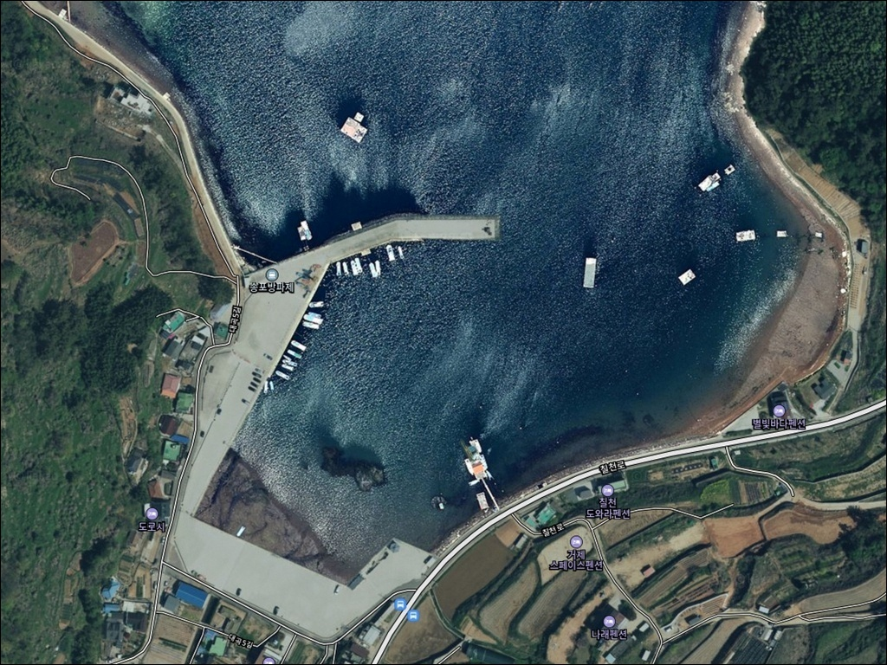
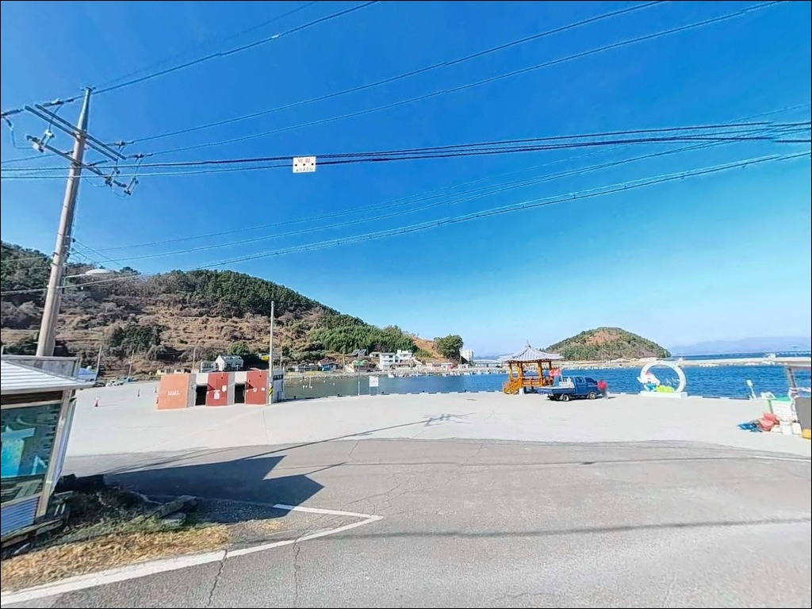
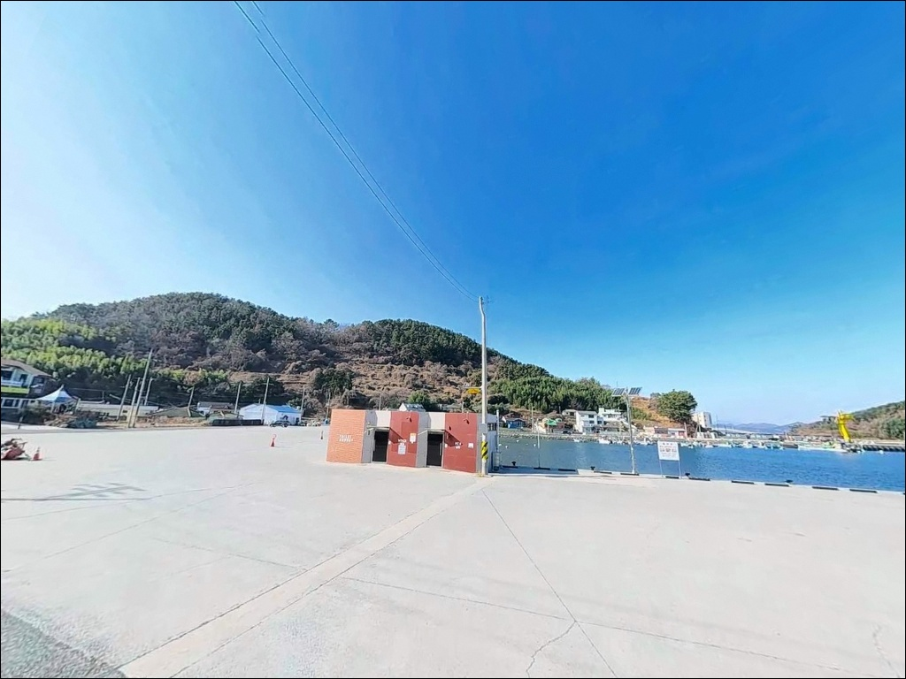
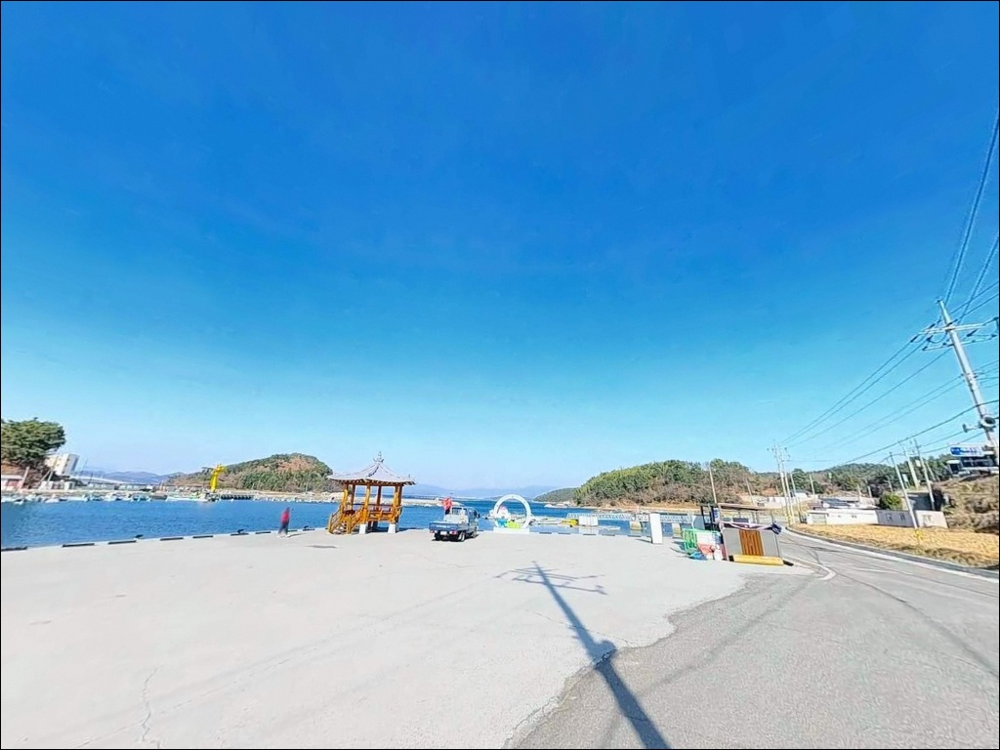
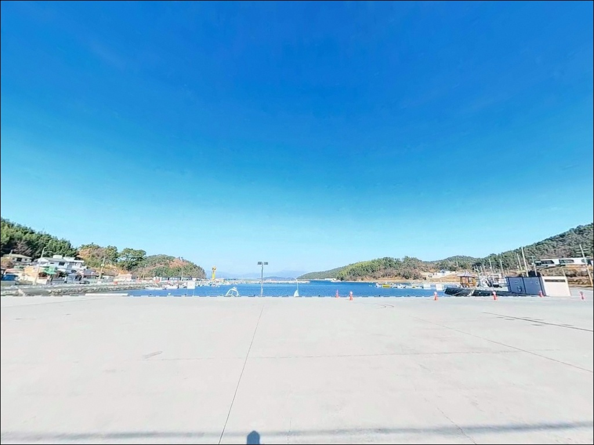
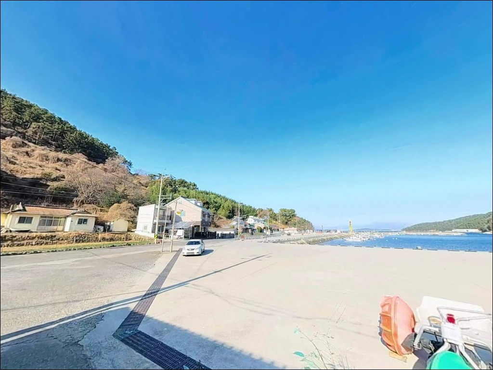
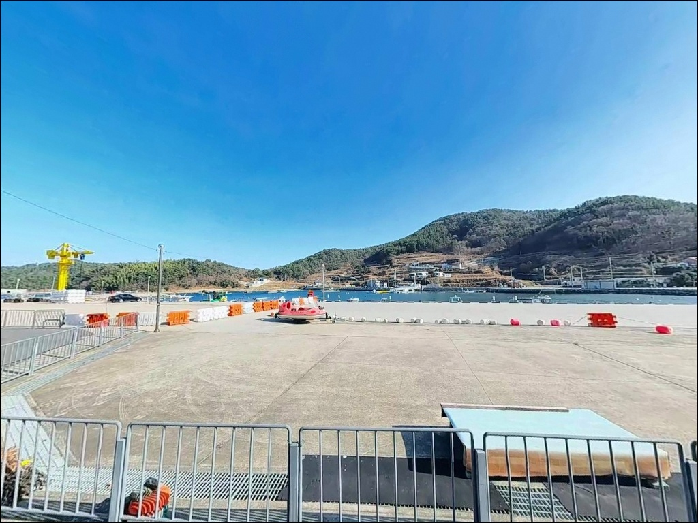
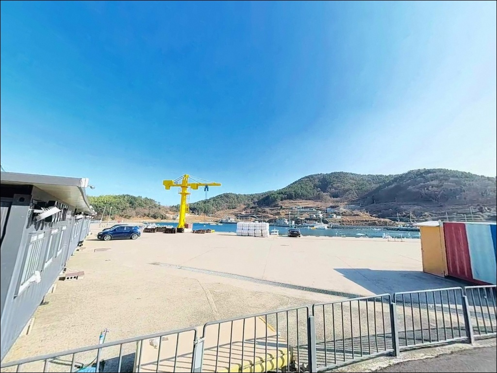
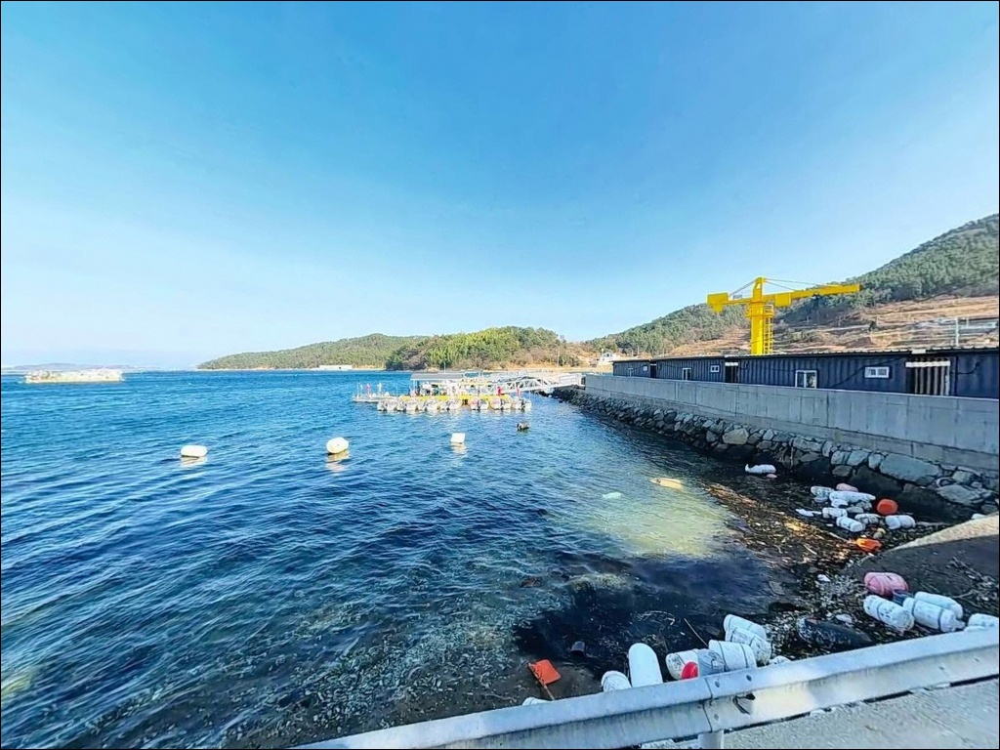

칠천도 송포방파제, 섬 내 낚시점 없어 진입 전 채비 챙겨야 할 루어 포인트
이 페이지에는 광고(제휴 링크 포함)가 있으며, 광고 링크를 통해 구매하면 운영자가 판매 수익 또는 수수료를 받을 수 있습니다. 포인트 사진: 카카오맵 스카이뷰·로드뷰. 이 페이지의 지도·사진 이미지는 카카오맵의 실제 서비스 이미지와 다를 수 있습니다.


포인트 안내
송포방파제
경남 거제시 하청면 대곡리 77-5
칠천도에 진입하기 전에
낚시 채비와 식수를 확보하지 않으면
섬 내부에서 보충할 방법이 없습니다.
칠천도 내에는 낚시점이 없고
상점도 드물어,
진입 전 준비가 출조 성패를 가르는
포인트입니다.
경남 거제시 하청면 대곡리,
칠천도 최북단에 자리한 송포방파제는
1972년 어촌정주어항으로 지정된
방파제 150m·물양장 190m 규모의 소형 어항입니다.
진해만 내해에 위치해 파도와 바람 영향이 적고,
발판이 안정적인 생활낚시 구조를 갖추고 있습니다.
이 글은 송포방파제의
진입 동선, 차박 여건, 주변 인프라,
지형 기반 낚시 여건과 스타일 제안에 집중합니다.
조황 단정이나 특정 어종 보장은
이 글의 범위에 포함되지 않습니다.

1. 진입 동선과 포인트 접근성
칠천도는 거제 본섬과
칠천대교(길이 425m)로 연결되어 있습니다.
다리를 건너면 칠천도 일주도로가 평탄하게 이어지며,
섬 최북단 대곡리까지는
칠천대교에서 약 4~5km 거리입니다.
도로 대부분이 왕복 2차선 포장 상태로 유지되어
승용차와 소형 캠핑카 모두 진입에 무리가 없습니다.
방파제 입구의 콘크리트 광장 부지와
내항 측면 평지가 주차 공간으로 활용됩니다.
방파제와 주차 위치가 가까워
장비를 나르는 동선이 짧고,
캠핑카나 카라반도 회차 공간을 충분히 확보할 수 있는
구조입니다.
마을 내 진입로 구간은 폭이 좁아지는 경우가 있으므로,
대형 차량은 진입 전 위성지도로
대곡리 일대 도로 폭을 미리 확인하는 편이 좋습니다.
어선 조업용 물양장 진입로 주변은
어선 통행 동선을 막지 않는 위치에
주차하는 것이 기본 매너입니다.

2. 차박 환경과 야간 체류 여건
방파제 입구 콘크리트 광장은
평탄하고 면적이 넓어
차박 체류 공간으로 활용하기 좋은 구조입니다.
항내를 비추는 가로등이 상시 점등되어 있어
야간 시야 확보가 양호한 편이며,
마을과 어느 정도 거리를 두고 있어
독립적인 분위기에서 야간을 보낼 수 있습니다.
진해만 내해에 위치한 내만 구조 덕분에
파도 소음이 적고 해면이 비교적 잔잔합니다.
다만 방파제 북쪽이 수로 방향으로 개방되어 있어
기상에 따라 북쪽에서 바람이 들어오는 경우가 있습니다.
출조 전날 풍향과 풍속을 함께 확인하는 것이
야간 체류 안정성을 높이는 조건입니다.
대곡리는 소형 어촌마을이어서
야간 차량 통행 빈도가 낮고
전반적으로 조용한 환경입니다.
낚시를 마치고 하룻밤 머무는 용도로는
주차 공간과 야간 조명 여건 모두
무리 없는 수준으로 갖춰져 있습니다.


3. 주변 편의시설 및 인프라 현황
방파제 인근에는 세면시설을 갖춘 화장실이 있습니다.
다만 칠천도 내부에는
낚시점이 없으며 상점도 드문 편이라,
채비·미끼·식수·식량을 모두 진입 전에 갖추는 것이
현실적인 준비 방식입니다.
칠천대교를 건너 거제 본섬 방향으로 이동하면
하청면 소재지에 닿습니다.
농협 하나로마트, 편의점, 식당, 주유소가
이 일대에 집중되어 있어
진입 전 하청면 소재지에서 모든 보급을 마치는 동선이
효율적입니다.
칠천도 내부는 섬 특성상
응급 상황 시 거제 시내까지 이동 시간이 걸립니다.
비상약품·음료수·여분 채비는
넉넉하게 준비하고 진입하는 것이 기본입니다.

4. 진입 전 반드시 챙겨야 할 준비사항
칠천도 내에는 낚시점이 없습니다.
봉돌, 바늘, 목줄, 에기 등 소모성 채비는
칠천대교 진입 전에 하청면 방향에서
미리 확보해야 합니다.
원투낚시라면 여분 채비를 넉넉히 준비하는 것이
바닥 지형 손실에 대비하는 방법입니다.
북쪽 수로 방향이 개방된 구조 특성상
기상 변화가 빠르게 나타날 수 있습니다.
출조 당일 아침 기상청 예보와
해양기상 특보를 한 번 더 확인하는 것이
포인트 진입 전 마지막 판단 기준입니다.
풍속이 강할 경우 칠천도 내 다른 방향 방파제로 이동하는
유연한 대응이 필요합니다.
물양장 구역은 어선 작업 공간입니다.
어선 접안 시에는 낚시 채비를 정리하고
통행로를 비워주는 것이 기본 매너이며,
야간에는 방파제 끝단 조명이 충분하지 않은 구간이 있으므로
헤드랜턴과 구명조끼는 반드시 지참해야 합니다.

5. 지형 기반 낚시 여건 분석
송포방파제는 칠천도 최북단에서
거제 본섬과의 협수로를 마주하는 위치에 있습니다.
진해만 내해에 속하는 이 해역은
조류 흐름이 섬 남부에 비해 완만하고,
파도 영향도 칠천도 본섬이 상당 부분 차단하는 구조입니다.
낚시 발판이 안정적이고 채비 컨트롤이 비교적 수월한
지형 조건을 갖추고 있습니다.
수심은 방파제 중간 구간에서 2~3m,
끝단으로 갈수록 5~7m 안팎으로 깊어지는
완만한 수심 변화 구조입니다.
바닥 지형은 모래와 펄이 혼합된 구성이며,
방파제 끝단 주변으로는
수중 여가 산재한 암초 구간도 형성되어 있습니다.
원투 채비 운용 시 밑걸림은 끝단 근처에서 발생하는 편이며,
사질 구간에서는 밑걸림이 적은 편입니다.
야간 가로등이 항내를 비추는 구조여서
집어 효과가 자연스럽게 형성됩니다.
가로등 불빛 경계선 인근이
야간 루어 운용에 유리한 자리입니다.
출조 전에는 "송포방파제 조황" 또는
"칠천도 방파제 낚시"로 검색해
최신 조황을 확인하는 것이 방문 전 기본 절차입니다.


야간 가로등 집어 효과가 달라지는 낚시 스타일 선택 기준
라이트 루어 게임이 이 포인트의 지형과
가장 잘 맞는 스타일입니다.
야간에 상시 점등되는 가로등이
자연스러운 집어 환경을 만들어주어,
소형 지그헤드에 웜을 결합한 채비로
볼락과 전갱이를 노리는 운용이 효율적입니다.
방파제 끝단과 가로등 불빛 경계선 인근이
핵심 탐색 구간입니다.
에깅도 이 포인트 지형에 어울리는 방식입니다.
방파제 외항 쪽 모래·펄 혼합 바닥은
갑오징어가 서식하기 좋은 지형 조건을 갖추고 있습니다.
가을철 외항 방향 바닥층을 훑는 에깅이
이 해역에서 기대해볼 수 있는 방식이며,
주꾸미도 같은 시즌 대상어로 함께 노릴 수 있습니다.
원투낚시는 방파제 외항 방향 30~50m 구간을
노리는 방식이 이 해역과 맞습니다.
사질 바닥층에서는 도다리·보리멸,
야간 원투로는 붕장어를
기대해볼 수 있는 지형 구조입니다.
밑걸림이 적은 편이라
채비 손실 부담 없이 운용할 수 있습니다.
찌낚시도 외항 끝단 3~4m 수심 구간을
공략하는 방식으로 운용할 수 있습니다.
감성돔과 노래미를 기대할 수 있는 구조이며,
조류가 완만한 내만 특성상
채비 흐름이 안정적인 편입니다.

7. 대안 포인트와 플랜 B 동선
송포방파제 여건이 맞지 않거나
주차 공간이 여의치 않을 때는
약 1.5km 거리의
대곡방파제가 첫 번째 대안입니다.
같은 칠천도 내만 해역에 속하며
수심이 7~8m 내외로 원투낚시에 유리한
지형 조건을 갖추고 있습니다.
약 3km 거리의 물안방파제는
갈치낚시 포인트로 별도로 알려진 곳입니다.
야간 갈치 시즌에 송포방파제 조황이
기대에 못 미칠 경우
물안방파제로 이동하는 동선이
칠천도 내에서 가장 현실적인 대안 경로입니다.
황덕선착장은 약 3km 거리로,
루어낚시가 가능한 구조입니다.
칠천도 일주도로 서쪽 방향에 위치하며
황덕도 방향 수로를 끼고 있어
조류 흐름이 살아 있는 편입니다.
차박을 선호하되 설비형 환경이 필요하다면
칠천대교 서쪽 약 1.5km 지점
옥계오토캠핑장(하청면 연구리 414-9)이
유력한 대체 숙영 후보입니다.
주차 28면 규모에 식수대와 전기시설이 갖춰져 있습니다.

진해만 내만 구조를 이해하면
송포방파제의 쓰임새가 달라집니다
야간 라이트 루어나 가을철 에깅을
주력으로 즐기는 낚시인에게
송포방파제의 지형 조건은 잘 맞는 구조입니다.
발판이 안정적이고 조류가 완만해
채비 컨트롤에 부담이 적으며,
가로등 집어 환경이 야간 루어 운용을
자연스럽게 뒷받침합니다.
반면 칠천도 내에 낚시점이 없다는 점은
방문 전 반드시 인지해야 할 조건입니다.
채비·미끼·식수·식량을
칠천대교 진입 전 하청면 소재지에서
모두 갖추고 들어가야 하며,
완전 자급 체제가 이 포인트 방문의 전제 조건입니다.
방파제 입구 넓은 광장에서
낚시를 마치고 하룻밤 머무는 차박 여행자라면,
바람 방향 확인 한 가지만 사전에 챙겨두면
잔잔한 진해만 내만을 곁에 두고
조용하게 보낼 수 있는 출조가 됩니다.